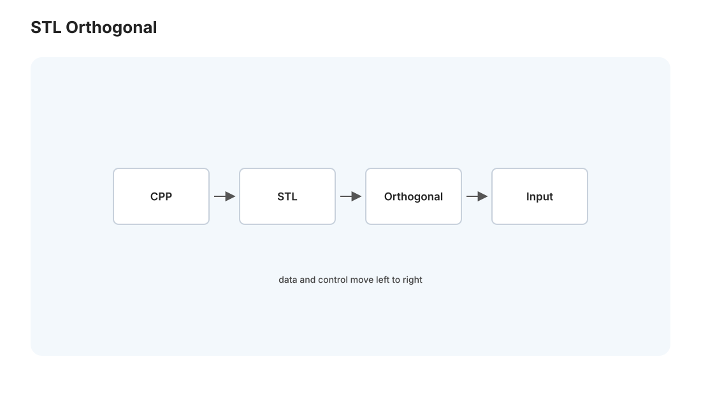
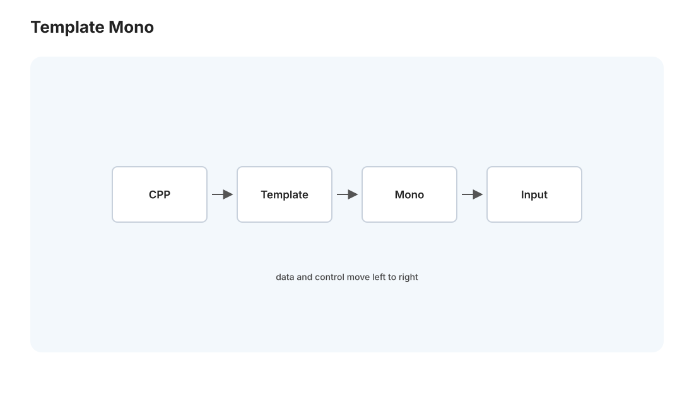
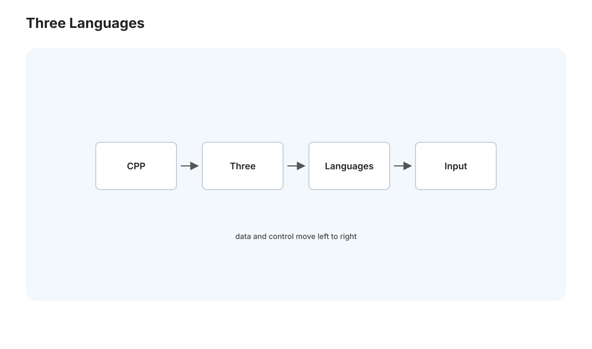

本页目录
C++ II · 现代 C++、STL、模板与并发
对标：Effective Modern C++（Meyers）/ A Tour of C++ / cppreference ｜ 前置：cpp-01（RAII、值/移动语义）、par 线（并发） cpp-01 讲 C++ 的内存与生命周期模型，这一页讲你实际写 C++ 时用的东西：STL（标准模板库）的容器与算法、模板如何实现零成本泛型（以及它的代价）、现代 C++（C++11 起）让语言好用得多的特性、以及 C++ 的并发工具与深水陷阱。读完你对 C++ 从"能看懂"到"知道怎么写得现代、安全"。
1. STL:容器 + 算法 + 迭代器的正交设计

STL 是 C++ 标准库的精华，一个优雅的正交设计——容器、算法、迭代器三者解耦：
- 容器：vector（动态数组，默认首选，🔗 csapp-02 缓存友好的连续内存）、map/set（红黑树，有序）、unordered_map/unordered_set（哈希表，🔗 db-01）、deque/list/array。选容器 = 选底层数据结构 + 缓存行为（🔗 perf-02"数组胜链表"在此：优先 vector）。
- 算法：sort/find/transform/accumulate/copy……泛型算法通过迭代器操作任何容器——std::sort 能排 vector、也能排 array，因为它只依赖迭代器接口。
- 迭代器：容器和算法之间的桥——算法不知道容器是什么，只通过迭代器遍历。这个解耦让 \(M\) 个容器 × \(N\) 个算法只需 \(M+N\) 份代码而非 \(M\times N\)（🔗 comp-01 的 IR 解耦、net 分层同一种"中间抽象"思想）。
现代写法：C++20 的 ranges 让 STL 可组合、可管道化（v | filter | transform，🔗 pl-02 函数式、py-01 生成器）——比裸迭代器清爽得多。
2. 模板:零成本泛型（及其代价）

模板是 C++ 泛型编程的机制——写一次代码、适用多种类型，编译期为每个用到的类型生成专门代码（单态化）：
- 零成本：std::vector<int> 和 std::vector<double> 各生成专门代码，和手写一样快（🔗 cpp-01 零成本抽象、rust-02 泛型单态化同理）——不像 Java 泛型的类型擦除 + 装箱。
- 图灵完备的编译期计算：模板元编程能在编译期算东西（constexpr 现代化了它）——把运行期工作挪到编译期。
- 代价：
- 编译慢 + 代码膨胀（每个类型一份实例）。
- 错误信息噩梦：模板出错的报错又长又难读（C++20 的 concepts 大幅改善——给模板参数加约束，错误更清晰，🔗 rust-02 的 trait bound 是同一思想）。
- duck typing 式：模板不检查类型"是什么"，只要求它"支持用到的操作"（🔗 py-01 鸭子类型的编译期版）——concepts 把这个约束显式化。
读法：模板 = 编译期的鸭子类型 + 单态化——威力极大（STL 全靠它），但历史上难用，现代 C++（concepts）在补救。理解它你才懂 STL 为什么能又泛型又快。
3. 现代 C++:让语言好用起来
C++11 是分水岭——之后的"现代 C++"比老 C++ 好写太多，几条必须用的：
- auto 类型推导：auto x = ... 不用写冗长类型（🔗 pl-01 HM 推断的实用版）。
- 范围 for：for (auto& x : container) 而非裸迭代器。
- lambda：[](int x){ return x*2; } 匿名函数 + 闭包（🔗 pl-01 λ 演算、py 高阶函数）——STL 算法的好搭档。
- 智能指针（cpp-01）：unique_ptr/shared_ptr 取代裸 new/delete。
- 移动语义 + std::move（cpp-01）。
- constexpr：编译期常量计算。
- std::optional/std::variant/std::expected：类型安全地表达"可能没值/多种类型/可能出错"（🔗 pl-02 的 ADT、rust 的 Option/Result——现代 C++ 也在往这个方向走）。
方法论：写现代 C++（C++17/20），别写"带类的 C"——用 RAII + 智能指针 + STL + auto + lambda，代码会安全清晰得多。老式手动内存管理的 C++ 是 bug 温床。
4. C++ 并发:工具与深水陷阱
C++11 起有了标准并发库（🔗 par 线、os-02）：
- std::thread：线程；std::mutex + std::lock_guard（RAII 锁，cpp-01）：互斥；std::condition_variable：条件等待（🔗 os-02 生产者消费者）。
- std::atomic：原子操作（🔗 par-02 CAS、无锁）；内存序（memory_order）：C++ 的内存模型（par-02 的内存序标准正是 C++11 定义的，影响了整个行业）。
- std::async/future/promise：任务级并发。
深水陷阱（C++ 并发比大多数语言更危险）： - 数据竞争 = 未定义行为：C++ 里数据竞争不只是"结果错"，是 UB（编译器可假设它不发生、做出灾难性优化）。而 C++不帮你检查——全靠你正确加锁（🔗 rust-02 对比：Rust 编译期禁止数据竞争）。 - 手动锁易死锁（os-02 四条件）、易忘解锁（RAII 锁缓解）、易伪共享（🔗 csapp-02、par-01）。 - 工具：ThreadSanitizer 运行时抓数据竞争（必用）。
这正是 rust 线的最佳对照：C++ 给你全部并发能力但不保证安全（自律 + 工具），Rust 用类型系统在编译期消灭数据竞争（rust-02"无畏并发"）。写 C++ 并发要极度小心、配 sanitizer；这也解释了为什么新系统项目越来越多选 Rust。
5. C++ vs Rust vs Python:一张收束图

语言线读到这里，三门主力语言的定位可以对照收束（🔗 pl-02 的三条内存路线）：
| Python | C++ | Rust | |
|---|---|---|---|
| 内存 | GC（引用计数+分代） | 手动/RAII（你负责） | 所有权（编译器强制） |
| 速度 | 慢（解释+装箱），靠 C 库 | 最快（零成本抽象） | 接近 C++ |
| 安全 | 运行时（动态类型） | 弱（UB 多，自律+工具） | 强（编译期防内存/并发 bug） |
| 并发 | GIL 限制（多进程/async 绕） | 全能但危险 | 无畏（编译期防竞争） |
| 适合 | 快速开发/数据/AI 胶水 | 性能关键/系统/遗留 | 新系统项目/安全关键 |
没有最好的语言，只有最合适的——Medusa 用 Python（开发快、AI 生态、I/O 密集够用），若某个热点组件要极致性能 + 可靠可考虑 Rust，C++ 则常见于你依赖的库底层（PyTorch/数据库/编译器）。理解三者的取舍，你选语言就有了框架而非偏好。
6. 练习与要点
例 1（STL 组合） 用 std::vector + std::sort + lambda 比较器 + std::accumulate 完成一个"排序后求前 k 大的和"——体会容器/算法/迭代器解耦 + lambda 的表达力。
例 2（模板与 concept） 写一个泛型 max 模板，先不加约束看错误类型传入时的报错噩梦，再加 C++20 concept 约束看报错如何变清晰——理解 concepts 为什么被引入（对照 rust-02 trait bound）。
例 3（并发对照） 写一个 C++ 多线程递增共享计数器：忘加锁 → 数据竞争（ThreadSanitizer 报警）→ 加 lock_guard 修复。再对照 rust-02 例 1（Rust 忘加锁直接编译不过）——"自律+工具 vs 编译期强制"的区别一次刻进去。\(\blacksquare\)
语言线到此完整（8 页：PL 理论 2 + Python 2 + C++ 2 + Rust 2）。下一页进入工程与全栈线——全栈 I：以你运营的 Medusa 为解剖标本，追踪一个请求的一生。